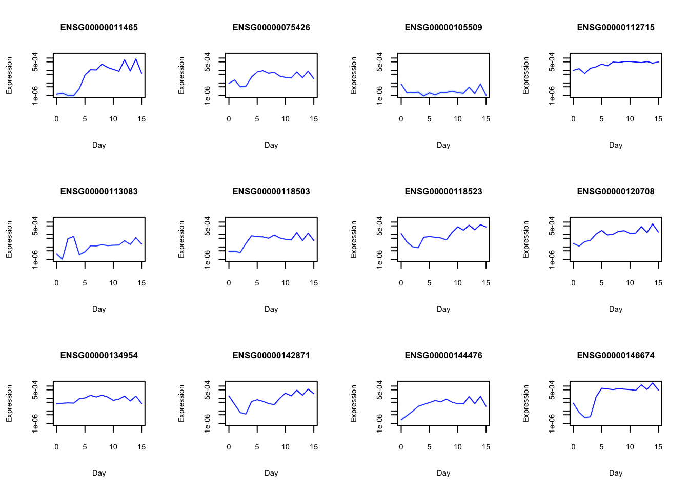

Example: Expression Analysis
Last updated: 2024-09-13
Checks: 7 0
Knit directory: FASHresultsummary/
This reproducible R Markdown analysis was created with workflowr (version 1.7.1). The Checks tab describes the reproducibility checks that were applied when the results were created. The Past versions tab lists the development history.
Great! Since the R Markdown file has been committed to the Git repository, you know the exact version of the code that produced these results.
Great job! The global environment was empty. Objects defined in the global environment can affect the analysis in your R Markdown file in unknown ways. For reproduciblity it’s best to always run the code in an empty environment.
The command set.seed(20240507) was run prior to running
the code in the R Markdown file. Setting a seed ensures that any results
that rely on randomness, e.g. subsampling or permutations, are
reproducible.
Great job! Recording the operating system, R version, and package versions is critical for reproducibility.
Nice! There were no cached chunks for this analysis, so you can be confident that you successfully produced the results during this run.
Great job! Using relative paths to the files within your workflowr project makes it easier to run your code on other machines.
Great! You are using Git for version control. Tracking code development and connecting the code version to the results is critical for reproducibility.
The results in this page were generated with repository version a6ad793. See the Past versions tab to see a history of the changes made to the R Markdown and HTML files.
Note that you need to be careful to ensure that all relevant files for
the analysis have been committed to Git prior to generating the results
(you can use wflow_publish or
wflow_git_commit). workflowr only checks the R Markdown
file, but you know if there are other scripts or data files that it
depends on. Below is the status of the Git repository when the results
were generated:
Ignored files:
Ignored: .DS_Store
Ignored: .Rhistory
Ignored: .Rproj.user/
Ignored: analysis/.DS_Store
Ignored: analysis/.Rhistory
Ignored: code/.DS_Store
Ignored: code/cpp/.DS_Store
Ignored: code/function/.DS_Store
Ignored: code/function/.Rhistory
Ignored: data/.DS_Store
Ignored: data/expression_data/.DS_Store
Ignored: output/.DS_Store
Ignored: output/example/.DS_Store
Ignored: output/example/figure/
Ignored: output/simulation_pollution/.DS_Store
Ignored: output/simulation_pollution/figure/
Unstaged changes:
Modified: analysis/simulation_eQTL_identification.Rmd
Modified: code/cpp/Poisson_just_fixed.cpp
Modified: code/cpp/Poisson_just_fixed_causes.cpp
Modified: code/cpp/Poisson_just_fixed_covid.cpp
Modified: code/cpp/Poisson_just_fixed_expression.cpp
Modified: code/cpp/Poisson_just_fixed_expression.o
Modified: code/cpp/Poisson_just_fixed_expression.so
Modified: code/function/functions_simulation_eQTL_test.R
Modified: output/expression/L_matrix.rda
Modified: output/expression/fitted_pos_results.rda
Modified: output/simulation_eQTL_test/L_matrix.rda
Modified: output/simulation_eQTL_test/L_matrix_nonlinear.rda
Modified: output/simulation_eQTL_test/fitted_datasets.rda
Modified: output/simulation_eQTL_test/fitted_datasets_nonlinear.rda
Modified: output/simulation_eQTL_test/mash_result.rda
Modified: output/simulation_eQTL_test/posterior_weights_matrix.rda
Modified: output/simulation_eQTL_test/posterior_weights_matrix_nonlinear.rda
Modified: thought_process
Note that any generated files, e.g. HTML, png, CSS, etc., are not included in this status report because it is ok for generated content to have uncommitted changes.
These are the previous versions of the repository in which changes were
made to the R Markdown (analysis/expression.Rmd) and HTML
(docs/expression.html) files. If you’ve configured a remote
Git repository (see ?wflow_git_remote), click on the
hyperlinks in the table below to view the files as they were in that
past version.
| File | Version | Author | Date | Message |
|---|---|---|---|---|
| html | b729c3f | Ziang Zhang | 2024-06-10 | Build site. |
| Rmd | 62566ff | Ziang Zhang | 2024-06-10 | wflow_git_commit(c("analysis/expression.Rmd")) |
| html | fb94e2d | Ziang Zhang | 2024-05-31 | Build site. |
| Rmd | d6a5a69 | Ziang Zhang | 2024-05-31 | wflow_publish("analysis/expression.Rmd") |
| html | bf7911a | Ziang Zhang | 2024-05-31 | Build site. |
| Rmd | d7ad1da | Ziang Zhang | 2024-05-31 | wflow_publish("analysis/expression.Rmd") |
| html | 6d68a5d | Ziang Zhang | 2024-05-28 | Build site. |
| Rmd | da46108 | Ziang Zhang | 2024-05-28 | wflow_publish(files = "analysis/expression.Rmd") |
| html | 00d489f | Ziang Zhang | 2024-05-27 | Build site. |
| Rmd | ade2216 | Ziang Zhang | 2024-05-27 | wflow_publish(files = "analysis/expression.Rmd") |
| html | cfe24a9 | Ziang Zhang | 2024-05-27 | Build site. |
| Rmd | 16264cf | Ziang Zhang | 2024-05-27 | wflow_publish(files = "analysis/expression.Rmd") |
| html | 425cb9d | Ziang Zhang | 2024-05-27 | Build site. |
| Rmd | ab342cb | Ziang Zhang | 2024-05-27 | wflow_git_commit(c("analysis/simulation_eQTL_identification.Rmd", |
| html | 3b37c54 | Ziang Zhang | 2024-05-15 | update html |
| Rmd | 08cc7a7 | Ziang Zhang | 2024-05-15 | wflow_git_commit(c("analysis/expression.Rmd", "analysis/covid_example.Rmd")) |
| html | 5f486a4 | Ziang Zhang | 2024-05-15 | update the expression example |
| Rmd | f571ee0 | Ziang Zhang | 2024-05-15 | wflow_git_commit(c("analysis/covid_example.Rmd", "code/function/functions_fitting_Poisson_covid.R", |
Setup
We consider the (raw) gene expression data measured over 16 days as studied in Strober et al, 2019. For simplicity of the presentation, we consider only one cell-line in this example. The dataset contains the raw expression counts of 16319 genes.
To model the true (log) expression level \(f_i(t_j)\) of the \(i\)th gene at day \(t_j\), we assume that the expression count \(y_{i}(t_j)\) is Poisson distributed with mean \(o_j\exp \left(f_i\left(t_j\right)\right)\), where \(o_j\) is the library size at day \(t_j\).
Model
Assume most of the gene expression trajectories are expected to be linear, we therefore consider the following finite mixture prior for each gene expression level \(f_i(t_j)\): \[f_i(t) = \sum_{k=0}^K \pi_k \text{GP}_k(t).\] For each \(k\), the mixture component has the prior: \[Lf(t) = \sigma_k W(t), \] with \(W(t)\) being a Gaussian white noise process and \(\sigma_k\) being the smoothness. Choosing \(L = \frac{\partial^2}{\partial t^2}\), the base model that each \(f_i\) being shrunk to is therefore \(\text{Null}\{L\} = \text{span}\{1,t\}\).
Processing the expression data
all_data_names <- list.files(data_dir)
#### let's consider one cell-line for simplicity
load(paste0(data_dir, "/", all_data_names[1]))
str(expression_data_one_cell_line) tibble [261,104 × 5] (S3: tbl_df/tbl/data.frame)
$ Gene_id : chr [1:261104] "ENSG00000000419" "ENSG00000000419" "ENSG00000000419" "ENSG00000000419" ...
$ Cell_line : chr [1:261104] "18489" "18489" "18489" "18489" ...
$ Day : int [1:261104] 0 1 2 3 4 5 6 7 8 9 ...
$ value : int [1:261104] 825 2432 1044 874 766 632 839 685 640 636 ...
$ external_gene_name: chr [1:261104] "DPM1" "DPM1" "DPM1" "DPM1" ...Let’s create one dataset for each gene:
num_knots <- 8
p <- 2
datasets <- list()
all_gene <- unique(expression_data_one_cell_line$Gene_id)
for (gene in all_gene) {
datasets[[gene]] <- expression_data_one_cell_line %>% filter(Gene_id == gene)
datasets[[gene]]$x <- as.numeric(datasets[[gene]]$Day)
datasets[[gene]]$y <- datasets[[gene]]$value
}
save(datasets, file = paste0(result_dir, "/datasets.rda"))Compute the library sizes:
size_vec <- numeric(length = nrow(datasets[[1]]))
for (i in 1:length(size_vec)) {
all_counts <- unlist(lapply(datasets, function(x) {x$y[x$Day == (i-1)]}))
size_vec[i] <- sum(all_counts)
}
log_size_vec <- log(size_vec)Applying empirical Bayes
log_prec <- seq(0,5, length.out = 10)
psd_vec <- sort(c(0,exp(-.5*log_prec)))
## set up a progress bar
L_vecs <- vector("list", length(datasets))
pb <- txtProgressBar(min = 0, max = length(datasets), style = 3)
for (i in 1:length(datasets)) {
setTxtProgressBar(pb, i)
dataset <- datasets[[i]]
L_vecs[[i]] <- compute_log_likelihood_ospline_seq2(
dataset = dataset,
p = p,
num_knots = num_knots,
psd_iwp_vector = psd_vec,
pred_step = 1,
betaprec = 0.0001,
log_lib_size = log_size_vec
)
}
L_matrix <- do.call(rbind, L_vecs)
save(L_matrix, file = paste0(result_dir, "/L_matrix.rda"))fit.sqp <- mixsqp(L = L_matrix, log = TRUE)Running mix-SQP algorithm 0.3-54 on 16319 x 11 matrix
convergence tol. (SQP): 1.0e-08
conv. tol. (active-set): 1.0e-10
zero threshold (solution): 1.0e-08
zero thresh. (search dir.): 1.0e-14
l.s. sufficient decrease: 1.0e-02
step size reduction factor: 7.5e-01
minimum step size: 1.0e-08
max. iter (SQP): 1000
max. iter (active-set): 12
number of EM iterations: 10
Computing SVD of 16319 x 11 matrix.
Matrix is not low-rank; falling back to full matrix.
iter objective max(rdual) nnz stepsize max.diff nqp nls
1 +1.288380258e+00 -- EM -- 11 1.00e+00 8.54e-02 -- --
2 +1.271886900e+00 -- EM -- 11 1.00e+00 3.61e-02 -- --
3 +1.266954815e+00 -- EM -- 11 1.00e+00 2.02e-02 -- --
4 +1.264398622e+00 -- EM -- 11 1.00e+00 1.42e-02 -- --
5 +1.262746443e+00 -- EM -- 11 1.00e+00 1.10e-02 -- --
6 +1.261562091e+00 -- EM -- 11 1.00e+00 8.91e-03 -- --
7 +1.260661164e+00 -- EM -- 11 1.00e+00 7.38e-03 -- --
8 +1.259947407e+00 -- EM -- 11 1.00e+00 6.26e-03 -- --
9 +1.259363962e+00 -- EM -- 11 1.00e+00 5.67e-03 -- --
10 +1.258874758e+00 -- EM -- 11 1.00e+00 5.15e-03 -- --
1 +1.258455882e+00 +1.484e-02 11 ------ ------ -- --
2 +1.253372174e+00 +1.052e-03 9 1.00e+00 9.63e-02 4 1
3 +1.253371522e+00 +1.787e-06 9 1.00e+00 1.99e-03 2 1
4 +1.253371522e+00 -3.452e-08 9 1.00e+00 2.45e-06 2 1
Optimization took 0.02 seconds.
Convergence criteria met---optimal solution found.numiter <- nrow(fit.sqp$progress)
plot(1:numiter,fit.sqp$progress$objective,type = "b",
pch = 20,lwd = 2,xlab = "SQP iteration",
ylab = "objective",xaxp = c(1,numiter,numiter - 1))
| Version | Author | Date |
|---|---|---|
| bf7911a | Ziang Zhang | 2024-05-31 |
prior_weight <- data.frame(p = rep(p, each = length(psd_vec)), psd_iwp = psd_vec, prior_weight = fit.sqp$x)Obtaining posteriors
num_datasets <- length(datasets)
num_weights <- sum(prior_weight$prior_weight != 0)
posterior_weights_matrix <- matrix(nrow = num_datasets, ncol = num_weights)
# Loop through each dataset and perform fitting
fitted_datasets <- list()
# create a progress bar
pb <- txtProgressBar(min = 0, max = num_datasets, style = 3)
for (i in seq_along(datasets)) {
setTxtProgressBar(pb, i)
dataset <- datasets[[i]]
fit_result_final <- fit_ospline_with_prior2(
num_cores = num_cores,
dataset = dataset,
num_knots = num_knots,
prior_weight = prior_weight,
betaprec = 0.0001,
pred_step = 1,
log_lib_size = log_size_vec
)
posterior_weights_matrix[i, ] <- fit_result_final$posterior_weights[, "posterior_weight"]
fitted_datasets[[i]] <- aggregate_fit_with_prior(x = dataset$x, fit_results_with_prior = fit_result_final, original = TRUE)$summary_df
}
names(fitted_datasets) <- all_gene
colnames(posterior_weights_matrix) <- paste(as.character(fit_result_final$posterior_weights[, "p"]),
as.character(fit_result_final$posterior_weights[, "psd_iwp"]), sep = "_")
save(fitted_datasets, posterior_weights_matrix, file = paste0(result_dir, "/fitted_pos_results.rda"))load(paste0(result_dir, "/fitted_pos_results.rda"))posterior_weights_df <- as.data.frame(posterior_weights_matrix)
posterior_weights_df$id <- all_gene
melted_data <- melt(posterior_weights_df, id.vars = "id")
melted_data$variable2 <- sub("_.*", "", melted_data$variable)
melted_data$variable3 <- (round(as.numeric(sub("*._", "", melted_data$variable)), 3))
ggplot(melted_data, aes(x = id, y = value, fill = variable3)) +
geom_bar(stat = "identity", width = 0.7) + # Adjust bar width if necessary
labs(x = "Gene", y = "Weight", fill = "PSD") +
ggtitle("Structure Plot of Posterior Weights") +
scale_fill_gradient(low = "white", high = "blue") +
coord_flip() + # Flips the coordinates to make 'Gene' on the y-axis
theme(
axis.text.y = element_blank(),
axis.ticks.y = element_blank(),
panel.background = element_rect(fill = "white", colour = "grey"),
plot.background = element_rect(fill = "white", colour = NA)
)
Plot a sorted version of this, based on the mean PSD in each gene:
mean_psd <- apply(posterior_weights_matrix, 1, function(x) {
weighted_psd <- as.numeric(sub("*._", "", colnames(posterior_weights_matrix)))
sum(x * weighted_psd)
})
sorted_index <- order(mean_psd)
sorted_posterior_weights_matrix <- posterior_weights_matrix[sorted_index, ]
sorted_posterior_weights_df <- as.data.frame(sorted_posterior_weights_matrix)
sorted_posterior_weights_df$id <- all_gene[sorted_index]
melted_data_sorted <- melt(sorted_posterior_weights_df, id.vars = "id")
melted_data_sorted$variable2 <- sub("_.*", "", melted_data_sorted$variable)
melted_data_sorted$variable3 <- (round(as.numeric(sub("*._", "", melted_data_sorted$variable)), 3))
ggplot(melted_data_sorted, aes(x = factor(id, levels = sorted_posterior_weights_df$id), y = value, fill = variable3)) +
geom_bar(stat = "identity") +
labs(x = "Gene", y = "Weight", fill = "PSD") +
ggtitle("Structure Plot of Posterior Weights") +
coord_flip() +
scale_fill_gradient(low = "white", high = "blue") +
theme(
axis.text.y = element_blank(),
axis.ticks.y = element_blank(),
panel.background = element_rect(fill = "white", colour = "grey"),
plot.background = element_rect(fill = "white", colour = NA)
)
Clustering based on posterior weights
Let’s group them into 4 groups, based on the quantiles of the mean PSD:
mean_psd_ordered <- mean_psd[sorted_index]
quantiles <- quantile(mean_psd_ordered, probs = seq(0, 1, 1/6))
quantile_groups <- cut(mean_psd_ordered, breaks = quantiles,
include.lowest = TRUE, labels = FALSE)
sorted_posterior_weights_df$cluster <- quantile_groups
melted_data_quantiles <- melt(sorted_posterior_weights_df, id.vars = c("id", "cluster"))
melted_data_quantiles$variable2 <- sub("_.*", "", melted_data_quantiles$variable)
melted_data_quantiles$variable3 <- round(as.numeric(sub(".*_", "", melted_data_quantiles$variable)), 3)
melted_data_quantiles <- melted_data_quantiles %>% arrange(cluster)
# Plotting
ggplot(melted_data_quantiles, aes(x = factor(id), y = value, fill = variable3)) +
geom_bar(stat = "identity") +
labs(x = "Gene Index", y = "Weight", fill = "PSD Level") +
ggtitle("Structure Plot of Posterior Weights by Quantile Group") +
coord_flip() +
scale_fill_gradient(low = "white", high = "blue") +
facet_wrap(~cluster, scales = "free_y") +
theme_minimal() +
theme(
axis.text.y = element_blank(),
axis.ticks.y = element_blank(),
panel.background = element_rect(fill = "white", colour = "grey"),
plot.background = element_rect(fill = "white", colour = NA),
strip.background = element_rect(fill = "lightblue", colour = "deepskyblue", size = 1),
strip.text = element_text(face = "bold")
)Warning: The `size` argument of `element_rect()` is deprecated as of ggplot2 3.4.0.
ℹ Please use the `linewidth` argument instead.
This warning is displayed once every 8 hours.
Call `lifecycle::last_lifecycle_warnings()` to see where this warning was
generated.
plot_gene_expression <- function(gene) {
agg_result <- fitted_datasets[[gene]]
plot(datasets[[gene]]$Day, agg_result$median, type = 'l',
main = paste0(gene), xlab = "Day", ylab = "Expression", col = "blue",
cex = 0.5, ylim = c(0, max(datasets[[gene]]$y) * 1.2),
cex.main = 0.8, cex.lab = 0.7, cex.axis = 0.7)
points(datasets[[gene]]$Day, datasets[[gene]]$y, col = "black", cex = 0.5)
polygon(c(datasets[[gene]]$Day, rev(datasets[[gene]]$Day)),
c(agg_result$lower, rev(agg_result$upper)),
col = rgb(0.6, 0.8, 1, alpha = 0.3), border = NA)
}
plot_gene_expression_log <- function(gene) {
agg_result <- fitted_datasets[[gene]]
data_points <- datasets[[gene]]$y
positive_points <- data_points[data_points > 0] # Filter out non-positive values
if (length(positive_points) == 0) {
stop("No positive data points available for logarithmic plotting.")
}
min_y <- min(positive_points)
max_y <- max(agg_result$upper) # Assuming this is positive and makes sense in your context
# Set the limits for the y-axis
log_min_y <- min_y / 2 # Just a simple heuristic, can adjust based on your data's distribution
log_max_y <- max_y * 1.2
plot(datasets[[gene]]$Day, agg_result$median, type = 'l',
main = paste0(gene), xlab = "Day", ylab = "Expression", col = "blue",
cex = 0.5, log = "y", ylim = c(log_min_y, log_max_y),
cex.main = 0.8, cex.lab = 0.7, cex.axis = 0.7)
points(datasets[[gene]]$Day, data_points, col = "black", cex = 0.5)
polygon(c(datasets[[gene]]$Day, rev(datasets[[gene]]$Day)),
c(agg_result$lower, rev(agg_result$upper)),
col = rgb(0.6, 0.8, 1, alpha = 0.3), border = NA)
}
plot_gene_expression_log_just_f <- function(gene, log_size_vec) {
agg_result <- fitted_datasets[[gene]]
agg_result[,c(2,3,4)] <- agg_result[,c(2,3,4)]/exp(log_size_vec)
min_y <- min(agg_result$lower)
max_y <- max(agg_result$upper) # Assuming this is positive and makes sense in your context
# Set the limits for the y-axis
log_min_y <- min_y / 2 # Just a simple heuristic, can adjust based on your data's distribution
log_max_y <- max_y * 1.2
plot(datasets[[gene]]$Day, agg_result$median, type = 'l',
main = paste0(gene), xlab = "Day", ylab = "Expression", col = "blue",
cex = 0.5, log = "y", ylim = c(log_min_y, log_max_y),
cex.main = 0.8, cex.lab = 0.7, cex.axis = 0.7)
polygon(c(datasets[[gene]]$Day, rev(datasets[[gene]]$Day)),
c(agg_result$lower, rev(agg_result$upper)),
col = rgb(0.6, 0.8, 1, alpha = 0.3), border = NA)
}
# plot_gene_expression(gene)
plot_cluster_genes <- function(genes) {
if(length(genes) < 16) stop("Not enough genes in the cluster")
par(mfrow = c(4, 4), mar = c(4, 4, 2, 1)) # Adjust margins if necessary
for (gene in genes[1:16]) {
plot_gene_expression(gene)
}
par(mfrow = c(1, 1))
}
plot_cluster_genes_log <- function(genes) {
if(length(genes) < 16) stop("Not enough genes in the cluster")
par(mfrow = c(4, 4), mar = c(4, 4, 2, 1)) # Adjust margins if necessary
for (gene in genes[1:16]) {
plot_gene_expression_log(gene)
}
par(mfrow = c(1, 1))
}
plot_cluster_genes_log_just_f <- function(genes, log_size_vec){
if(length(genes) < 16) stop("Not enough genes in the cluster")
par(mfrow = c(4, 4), mar = c(4, 4, 2, 1)) # Adjust margins if necessary
for (gene in genes[1:16]) {
plot_gene_expression_log_just_f(gene, log_size_vec)
}
par(mfrow = c(1, 1))
}
# plot_cluster_genes(genes_cluster1)num_genes_per_cluster <- 16
num_clusters <- 6
genes_cluster1 <- sorted_posterior_weights_df$id[sorted_posterior_weights_df$cluster == 1][1:num_genes_per_cluster]
genes_cluster2 <- sorted_posterior_weights_df$id[sorted_posterior_weights_df$cluster == 2][1:num_genes_per_cluster]
genes_cluster3 <- sorted_posterior_weights_df$id[sorted_posterior_weights_df$cluster == 3][1:num_genes_per_cluster]
genes_cluster4 <- sorted_posterior_weights_df$id[sorted_posterior_weights_df$cluster == 4][1:num_genes_per_cluster]
genes_cluster5 <- sorted_posterior_weights_df$id[sorted_posterior_weights_df$cluster == 5][1:num_genes_per_cluster]
genes_cluster6 <- sorted_posterior_weights_df$id[sorted_posterior_weights_df$cluster == 6][1:num_genes_per_cluster]Smoothing result for each cluster (Overall expression level \(o_j\exp(f_i(t_j))\)
For cluster 1:
plot_cluster_genes(genes_cluster1)
For cluster 2:
plot_cluster_genes(genes_cluster2)
For cluster 3:
plot_cluster_genes(genes_cluster3)
For cluster 4:
plot_cluster_genes(genes_cluster4)
For cluster 5:
plot_cluster_genes(genes_cluster5)
Smoothing result for each cluster (Just the function \(f_i\) after Log)
For cluster 1:
plot_cluster_genes_log_just_f(genes_cluster1, log_size_vec)
For cluster 2:
plot_cluster_genes_log_just_f(genes_cluster2, log_size_vec)
For cluster 3:
plot_cluster_genes_log_just_f(genes_cluster3, log_size_vec)
For cluster 4:
plot_cluster_genes_log_just_f(genes_cluster4, log_size_vec)
For cluster 5:
plot_cluster_genes_log_just_f(genes_cluster5, log_size_vec)
Question: what genes have non-linear trajectories?
p0 <- posterior_weights_df$`2_0` # prob of PSD = 0 -> linear
local_fda <- p0
fda_df <- data.frame(gene = all_gene, fda = local_fda)
fda_df <- fda_df[order(fda_df$fda), ] # ordering it
fda_df$cumulative_fda <- cumsum(fda_df$fda)/seq_along(fda_df$fda)
ensembl <- biomaRt::useMart("ensembl", dataset = "hsapiens_gene_ensembl")
# Assuming your data frame is 'gene_exp_ordered' and it has a column 'Gene_id'
gene_symbols <- biomaRt::getBM(attributes = c('ensembl_gene_id', 'external_gene_name'),
filters = 'ensembl_gene_id',
values = fda_df$gene,
mart = ensembl)
colnames(gene_symbols)[1] <- "gene"
colnames(gene_symbols)[2] <- "gene_name"
fda_df <- merge(fda_df, gene_symbols, by = "gene") %>% arrange(cumulative_fda)plot(fda_df$cumulative_fda, type = "l", xlab = "Ordered Genes", ylab = "Cumulative FDA", ylim = c(0,1), cex = 0.1)
abline(h = 0.05, col = "purple", lty = "dashed")
What proportion of the genes are likely having non-linear trajectories?
fda_df %>% filter(cumulative_fda < 0.05) %>% nrow() / nrow(fda_df)[1] 1fda_df %>% filter(cumulative_fda < 0.05, !is.na(gene_name)) %>%
arrange(cumulative_fda) %>%
head(16) gene fda cumulative_fda gene_name
1 ENSG00000001617 0 0 SEMA3F
2 ENSG00000003249 0 0 DBNDD1
3 ENSG00000003436 0 0 TFPI
4 ENSG00000003509 0 0 NDUFAF7
5 ENSG00000003756 0 0 RBM5
6 ENSG00000003989 0 0 SLC7A2
7 ENSG00000004399 0 0 PLXND1
8 ENSG00000004478 0 0 FKBP4
9 ENSG00000004866 0 0 ST7
10 ENSG00000005100 0 0 DHX33
11 ENSG00000005108 0 0 THSD7A
12 ENSG00000005249 0 0 PRKAR2B
13 ENSG00000005339 0 0 CREBBP
14 ENSG00000005884 0 0 ITGA3
15 ENSG00000006016 0 0 CRLF1
16 ENSG00000006042 0 0 TMEM98Plot the log expression of the top 16 genes:
top_genes <- fda_df %>% filter(cumulative_fda < 0.05, !is.na(gene_name)) %>%
arrange(cumulative_fda) %>%
head(16) %>% pull(gene)
plot_cluster_genes_log_just_f(top_genes, log_size_vec)
sessionInfo()R version 4.3.1 (2023-06-16)
Platform: aarch64-apple-darwin20 (64-bit)
Running under: macOS Monterey 12.7.4
Matrix products: default
BLAS: /Library/Frameworks/R.framework/Versions/4.3-arm64/Resources/lib/libRblas.0.dylib
LAPACK: /Library/Frameworks/R.framework/Versions/4.3-arm64/Resources/lib/libRlapack.dylib; LAPACK version 3.11.0
locale:
[1] en_US.UTF-8/en_US.UTF-8/en_US.UTF-8/C/en_US.UTF-8/en_US.UTF-8
time zone: America/Chicago
tzcode source: internal
attached base packages:
[1] parallel splines stats graphics grDevices utils datasets
[8] methods base
other attached packages:
[1] lubridate_1.9.3 forcats_1.0.0 stringr_1.5.0 dplyr_1.1.3
[5] purrr_1.0.2 readr_2.1.4 tidyr_1.3.0 tibble_3.2.1
[9] tidyverse_2.0.0 mixsqp_0.3-54 reshape2_1.4.4 ggplot2_3.5.1
[13] Matrix_1.6-3 TMB_1.9.7 BayesGP_0.1.1 workflowr_1.7.1
loaded via a namespace (and not attached):
[1] tidyselect_1.2.0 farver_2.1.1 blob_1.2.4
[4] filelock_1.0.3 bitops_1.0-7 Biostrings_2.70.3
[7] RCurl_1.98-1.12 fastmap_1.1.1 BiocFileCache_2.10.2
[10] promises_1.2.1 XML_3.99-0.14 digest_0.6.33
[13] timechange_0.2.0 lifecycle_1.0.3 processx_3.8.2
[16] KEGGREST_1.42.0 RSQLite_2.3.6 magrittr_2.0.3
[19] compiler_4.3.1 progress_1.2.2 rlang_1.1.1
[22] sass_0.4.7 tools_4.3.1 utf8_1.2.3
[25] yaml_2.3.7 knitr_1.44 prettyunits_1.2.0
[28] labeling_0.4.3 curl_5.1.0 bit_4.0.5
[31] xml2_1.3.5 plyr_1.8.9 withr_2.5.1
[34] BiocGenerics_0.48.1 grid_4.3.1 stats4_4.3.1
[37] fansi_1.0.5 git2r_0.33.0 colorspace_2.1-0
[40] scales_1.3.0 biomaRt_2.58.2 cli_3.6.1
[43] rmarkdown_2.25 crayon_1.5.2 generics_0.1.3
[46] rstudioapi_0.15.0 httr_1.4.7 tzdb_0.4.0
[49] DBI_1.2.2 cachem_1.0.8 zlibbioc_1.48.2
[52] AnnotationDbi_1.64.1 XVector_0.42.0 vctrs_0.6.4
[55] jsonlite_1.8.7 callr_3.7.3 IRanges_2.36.0
[58] hms_1.1.3 S4Vectors_0.40.2 bit64_4.0.5
[61] irlba_2.3.5.1 jquerylib_0.1.4 glue_1.6.2
[64] ps_1.7.5 stringi_1.7.12 gtable_0.3.4
[67] GenomeInfoDb_1.38.8 later_1.3.1 munsell_0.5.0
[70] pillar_1.9.0 rappdirs_0.3.3 htmltools_0.5.6.1
[73] GenomeInfoDbData_1.2.11 dbplyr_2.3.4 R6_2.5.1
[76] rprojroot_2.0.3 evaluate_0.22 lattice_0.21-8
[79] Biobase_2.62.0 png_0.1-8 memoise_2.0.1
[82] httpuv_1.6.11 bslib_0.5.1 Rcpp_1.0.11
[85] whisker_0.4.1 xfun_0.40 fs_1.6.3
[88] getPass_0.2-4 pkgconfig_2.0.3